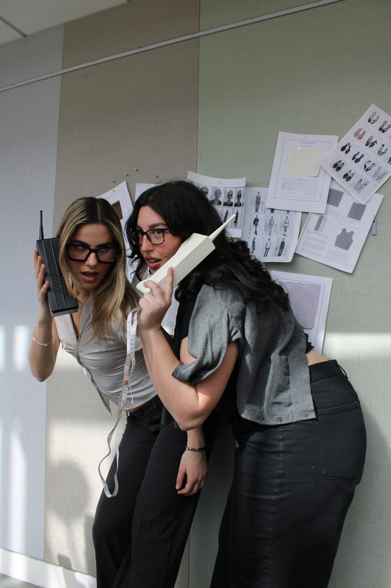
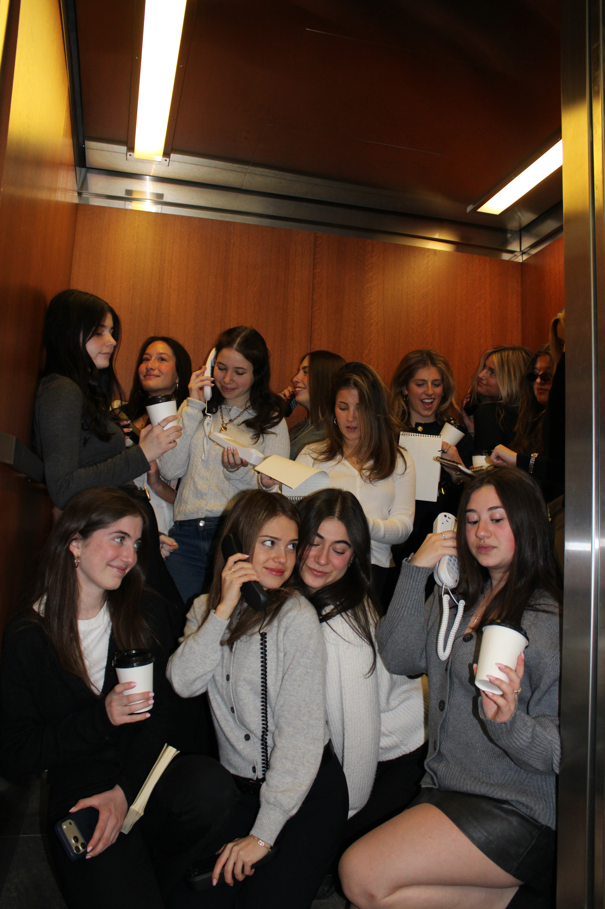
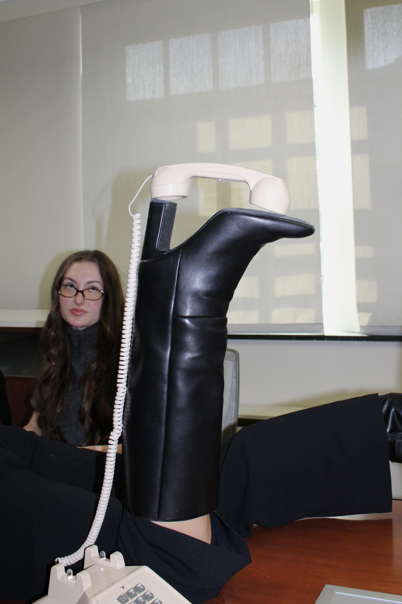
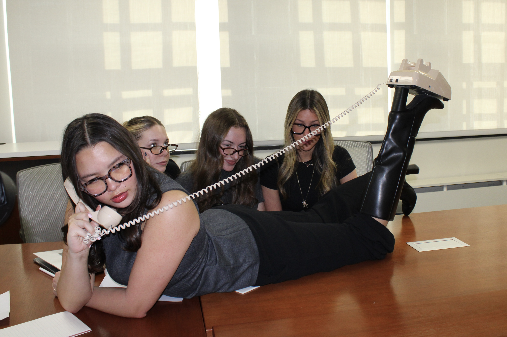
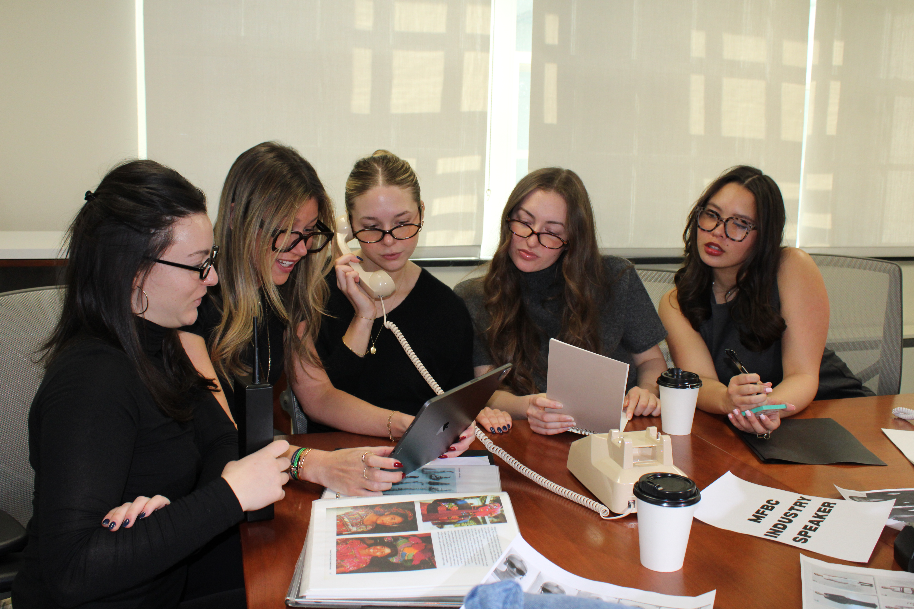
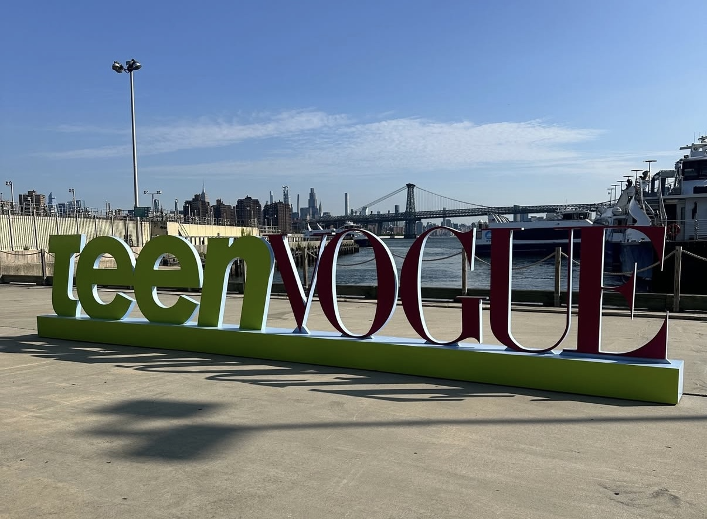
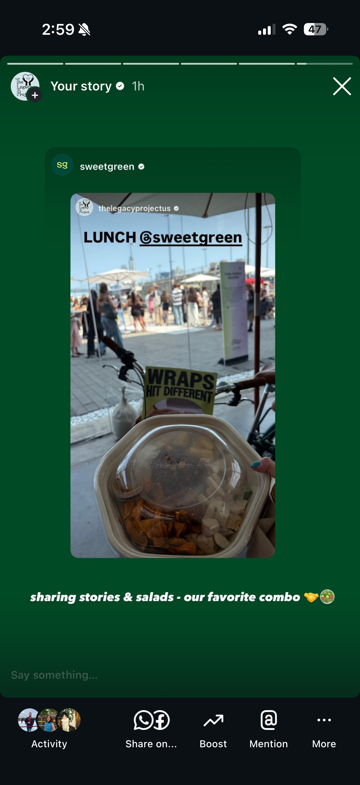

Social Media & Digital Marketing
Curation
Social Media & Content Creation
Created and edited fashion-focused TikTok videos to promote Cloud Closet, a fashion app. Collaborated with a five-person team to produce and publish 6–8 posts weekly, contributing to content strategy, trend integration, and brand storytelling. Developed short-form video content designed to capture audience interest, encourage engagement, and increase app visibility.





The Legacy Project
Event Coverage & User-Generated Content
Represented The Legacy Project at Teen Vogue Fest in Brooklyn, New York, connecting with industry professionals and capturing the event’s speakers, interactive experiences, and key takeaways. Created a day-in-the-life-style UGC recap that translated the event experience into engaging social content. The video expanded the organization’s visibility and earned a story repost from Sweetgreen, extending its reach to a broader audience.

